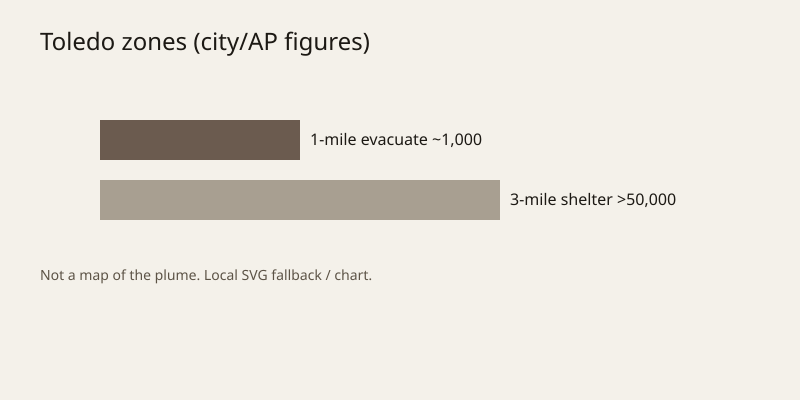

Ohio · industrial safety · 21–22 October 2026
A 5,500-gallon tank of glycidyl methacrylate ruptured in north Toledo; officials ordered nearly 1,000 evacuations and a three-mile shelter-in-place before venting the plume.

What is agreed across desks
Shortly before 21:30 local time on Tuesday 20 October 2026, a tank associated with MC Tank Transport Inc. at a facility near Progress Avenue in north Toledo failed. The company and the Ohio Environmental Protection Agency identified the contents as glycidyl methacrylate, a flammable liquid monomer used to improve the performance of certain plastics, paints and coatings. The EPA stated that the release began because of an error during transfer from a 5,500-gallon tank. Toledo Fire & Rescue ordered evacuation of the one-mile radius and a shelter-in-place for the three-mile radius, affecting more than 50,000 people, some of them across the state line in Michigan. One sheriff’s deputy who responded was evaluated at a hospital; officials described the injury as not serious. Hospitals in the metro area reported evaluating approximately 30 patients who described symptoms they linked to the odor or plume. By Wednesday evening the city had lifted the shelter-in-place and reduced the evacuation zone while allowing the remaining material to vent rather than attempting an immediate stop that responders judged more hazardous.
The white plume was visible for hours. Air monitoring was conducted by the U.S. EPA. No large secondary explosion occurred. These points appear in AP, Reuters, local television, and city briefings with consistent numbers and chemical identification.
What is only a quote
Mayor Wade Kapszukiewicz told reporters the tank “may still be explosive” in the morning hours and that responders were not approaching it closely. The company described the chemical in functional terms without releasing a full safety-data-sheet excerpt in the first statements. Residents interviewed by local stations said they smelled a sharp odor and were unsure whether to leave or stay. These are statements of concern or description; they are not measured concentrations or medical diagnoses.
Mechanism and history a reader needs
Glycidyl methacrylate is an organic compound that polymerizes readily and is classified as flammable and irritant. Industrial tanks that hold it are designed for closed transfer. An error during pumping or valve operation can allow liquid to escape and vaporize, producing a visible plume and an odor that people notice at concentrations below those that cause immediate acute injury. Because the vapor is flammable, introducing water or attempting to seal a still-pressurized tank can raise the chance of ignition. That is why responders and the city chose controlled venting once the initial leak had stabilized. Toledo sits on the Maumee River near Lake Erie; prevailing winds on 21 October carried the plume over residential neighborhoods along the shoreline. Similar industrial-chemical releases in the Midwest have historically produced shelter-in-place orders measured in hours rather than days when the material is a volatile organic rather than a persistent toxic gas.
The facility is a liquid-bulk terminal, not a continuous-process chemical plant. Transfer operations are the most common point of loss-of-containment events in that sector. The Ohio EPA’s description of a “transfer error” is consistent with that pattern, though the precise valve, hose, or operator action has not been detailed in the public record as of 22 October.
What the story is not
It is not a confirmed mass-casualty event. It is not evidence of intentional release. It is not a substitute for the still-unpublished air-monitoring tables or the company’s incident report. Comparisons to the 2023 East Palestine derailment or other high-profile chemical accidents remain analogies; the chemical, the container, and the response timeline differ. Claims that the city deliberately minimized the hazard or that the plume was harmless cannot be adjudicated until concentration data and longer-term health follow-up are released.

Source articles and scores
| Outlet | Headline | T | N | C |
|---|---|---|---|---|
| AP | Toledo chemical tank leak forces evacuations and shelter-in-place orders | 96 | 0 | 100 |
| Reuters | Chemical tank leak in Ohio forces evacuations | 95 | 0 | 100 |
| Local / EPA statements | TFRD announces reduced evacuation zone, end to shelter-in-place order after chemical release | 94 | 0 | 98 |